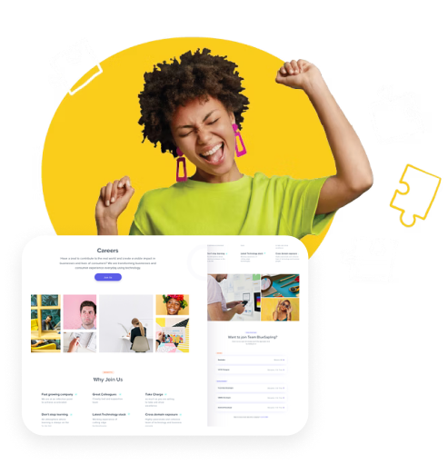

Recruitment marketing is a strategic implementation that allows an organization to search and engage with the relevant job applicants and encourage the most qualified ones for the offered role.
Recruiting is a consistent process that starts way prior when an employer releases a job position. While recruitment-marketing, which is relatively a new inclusion to the Human Resource (HR) world, is now a top priority for the recruiters and is inevitable for every successful recruiting strategy. Gradually, recruiters have started implementing recruitment marketing activities to bring the right talent into their recruiting funnel. For this, recruiters need to initiate recruitment marketing even before they align any candidate in their talent pipeline.
Every aspect of the talent hunt and acquisition is continuously enhanced and optimized by Recruitment Marketing. Looking at the critical phases of talent acquisition, Consult & Empathize (the need), Market & Promote (the job role), Proactive & Responsive (to the submissions), and Engage & Analyze (with applicants) are all stages Recruitment Marketing improves and optimizes the selection and hiring of the desired talent.
Talent Acquisition Checklist
To make the best use of the recruiting funnel, Brainmeasures experts discuss here the most relevant and result-driven recruitment marketing strategies for global recruiters.
CONTENT MARKETING
Content Marketing is a critical aspect of Recruitment Marketing. Sharing images of the workplace, fun events, team activities, and employees impress the existing and potential workforce. Also, create engaging content, like e-Books and webinars which let you engage with both the passive and active candidates. Additionally, writing informative blogs in collaboration, specifically with members of the departments that are complicated to fill job roles, to write about their job profile and recent projects.
Brainmeasures ROCKING-TIP
Collaborate with leaders in each department to build strategies for creating relevant content that has a positive impact on their next hire.
E-MAIL CAMPAIGNS
e-Mail Campaigns are no-longer a marketing or promotional assignment. Keep applicants and passive job seekers engaged by sending inducing e-Mails that capture their interests in your company. Your e-Mails might include facts, like what new is happening in the organization, what recently introduced job roles, or you may even share the relevant industry trends to let your candidates explore more about you.
Brainmeasures ROCKING-TIP
Automating your e-Mail campaign with a personal ‘human’ touch will not just save time but get you an assured click from your target audiences.

CAREER PAGE OPTIMIZATION
Career Page of the corporate website is the best place for attracting qualified job applicants. All you need to do is make it ‘thoughtfully’ appealing. Think of strategically adding compelling call-to-action links and simplify the online application form to engage with potentially the best talent.
Brainmeasures ROCKING-TIP
Optimization of the Career Page may include various Search Engine Optimization (SEO) strategies, like departmental blogging, employee introductions, employee experiences or testimonials, and other relevant information.
LEVERAGING SOCIAL MEDIA
Brainmeasures research revealed that close to 80% of job seekers use social media while searching for a job, while numerous active and passive candidates are daily adding on social media platforms. Therefore, we recommend leveraging social media for a result-driven promotion or marketing of job openings. Include relevant content pieces on your Social Media pages, like interview tips or resume writing tips. You may also add industry-specific hash-tags for desired candidates’ engagement.
Brainmeasures ROCKING-TIP
You may join local job Groups and Communities on Social Networks, like Facebook, LinkedIn, Twitter, and others. You may start communicating or sharing new job roles with ideal candidates.
EXISTING EMPLOYEE REFERRAL INITIATIVES
Internal Employee Referrals are the incredible source for hiring candidates for a simple reason that your existing workforce best understands the company’s culture and the ideal candidate’s profile. Encourage your employees to refer their friends which they think would best match opened job role.
Brainmeasures ROCKING-TIP
Persuade your employees with lucrative employee referral reward ideas, like cash rewards, movie tickets, event tickets, trip, a day’s off and many more.
RECRUITING ANALYTICS
Modern Recruiting is like marketing as everything here is measurable. Develop meaningful recruiting metrics and analyze those to get insights on how to improvise the hiring process. For this, team Brainmeasures recommends first to thoroughly understand and analyze every aspect and efforts involved in the company’s job-role requirements.
Brainmeasures ROCKING-TIP
You may choose from among various critical hiring metrics, including cost-per-applicant, applicants-per-hire, cost-per-hire, hires-per-source, time-to-hire, quality-of-hire, candidate-experience, and others.
TALENT COMMUNITIES AND GROUPS
These Candidates’ Communities and Groups primarily include the individuals who have not got the desired job they originally applied for, and are seeking relevant job roles. Through these group or community arrangements, recruiters can engage with candidates who send open or cold job applications as well as the individuals who are not qualified for a job yet but are on the verge of becoming qualified (like college students).
Brainmeasures ROCKING-TIP
You may form your groups or communities with the resources you have, and you may even connect with universities to make your company familiar to students and to hire potentially stronger talent.
DISPLAY ADVERTISING AND RETARGETING CANDIDATES
Recruiters may also use display advertising to reach out to specific audiences or candidates. Retarget active job seekers who have recently visited your career page and showed interest in the offered job role. Encourage them to re-visit your career webpage and complete the online job application form.
Brainmeasures ROCKING-TIP
You must make sure that your advertisement is crisp, appropriate, and appealing to generate more engagements from the targeted audiences.
INFERENCE
Worrying about engaging with the candidates who have already applied for the job openings should not be the only motivation, as advanced recruitment strategies search for individuals who may get well engage with your brand and show genuine interest to the offered career prospects. These recommended recruitment marketing strategies might help!